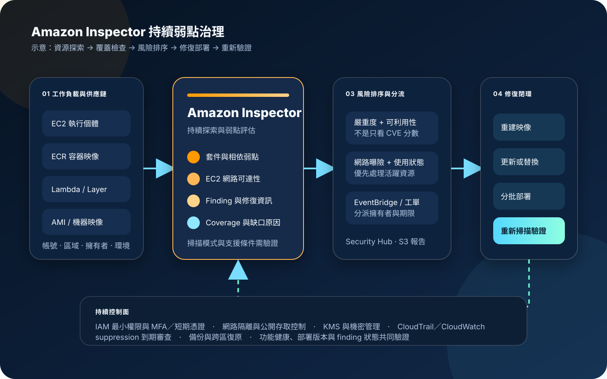

Amazon Inspector：持續弱點掃描與修復治理
Amazon Inspector 自動探索符合條件的工作負載，持續評估 Amazon EC2、Amazon ECR 容器映像、AWS Lambda 函數及另行啟用的機器映像等掃描範圍，產生軟體弱點與非預期網路曝險發現。服務提供風險線索與集中視野，但不會自動完成修補、業務影響判斷或接受風險核准。
作者：Dr. William｜查閱與發布：2026-11-06
服務定位
Amazon Inspector 是持續型弱點管理服務。它會探索符合條件的資源，依資源類型收集軟體清冊、程式相依套件或網路可達性資訊，對照安全公告與弱點情報後產生 finding。資源或套件變更、相關新 CVE 發布及重新掃描條件成立時，服務會更新評估結果。
Inspector 的價值不只是找出 CVE，而是把「哪些帳號與區域已啟用、哪些資源可被掃描、哪些發現可從網路到達、哪些工作負載正在使用，以及修復後是否關閉」連成可量測流程。它不能取代修補管理、原始碼審查、滲透測試、應用邏輯測試、組態基準、端點防護或事件應變。
核心概念與服務邊界
掃描對象與方法
- EC2 掃描：評估作業系統與套件弱點，以及網路可達性；可使用代理型、無代理或混合掃描模式。
- 代理型掃描：透過 AWS Systems Manager 管理與掃描元件取得軟體清冊，適合持續接收資源變更。
- 無代理掃描：對符合條件的 EBS 後端執行個體建立暫時快照並擷取清冊，完成後刪除服務建立的快照。
- ECR 增強型掃描：掃描私有登錄中的活動容器映像，並依映像推送、使用狀態與重掃期間持續評估。
- Lambda 標準掃描：檢查函數與 Layer 的套件相依弱點；程式碼掃描是另行啟用的附加能力。
- 機器映像掃描：可對自有 AMI 的 EBS 快照擷取清冊，不必先啟動執行個體。
發現、覆蓋與治理
- Finding：包含受影響資源、套件、弱點、嚴重度、修復資訊及適用時的網路路徑。
- Inspector score：可依工作負載情境調整 EC2 finding 的 CVSS 基礎分數，協助排序但不代替業務判斷。
- Coverage：呈現帳號、執行個體、映像、儲存庫與函數的掃描狀態及不受涵蓋原因。
- 委派管理員：可集中檢視組織帳號、掃描設定、覆蓋率與發現；服務與管理員設定具有區域性。
- EventBridge／Security Hub CSPM：可將發現送入事件分流、工單與集中安全態勢流程。
- Suppression：只隱藏符合條件的 finding，不會修復、關閉或降低實際風險。
適合與不適合的使用情境
適合
- 多帳號環境需要持續盤點 EC2、ECR、Lambda 與 AMI 的弱點覆蓋率。
- 容器團隊需要在映像推送後持續追蹤新出現的套件弱點，而不是只做一次性建置掃描。
- 維運團隊需要把高風險 finding 依資源擁有者、外部曝險、環境與修復時限自動分派。
- 安全團隊需要集中檢視工作負載弱點，並把結果整合至 Security Hub CSPM、EventBridge、S3 報告或工單。
- 需要以 coverage 指標找出未受管 EC2、停止掃描的映像、未支援環境與新帳號漏管。
不適合或不能單獨完成
- 把 Inspector 當成修補工具，期待它自動更新套件、重建映像或重新部署函數。
- 檢測應用邏輯缺陷、商業流程濫用、認證繞過或需要互動式驗證的 Web 弱點。
- 掃描本機資料中心、一般 SaaS 或未列入支援範圍的資源，而沒有其他弱點管理工具。
- 只看 Critical／High 數量，不處理 coverage 缺口、重複映像、已停止使用資源與風險例外。
- 直接依 suppression 規則認定風險已消失，或未設定例外到期與重新審查日期。
示意故事案例：網路商店的容器弱點修復閉環
以下為示意案例，不代表特定企業或正式部署。 一家網路商店使用多個 AWS 帳號執行 EC2 管理節點、ECS 容器服務與 Lambda 訂單處理函數。過去各團隊只在季度盤點弱點，映像推送後若隔週才公布新 CVE，正式環境通常要等到下一次盤點才會被注意。
新流程在安全帳號設定 Amazon Inspector 委派管理員，依區域啟用 EC2、ECR 與 Lambda 掃描。ECR finding 會與執行中容器使用狀態、映像標籤和服務擁有者對照；EC2 finding 同時檢查網路可達性；Lambda finding 則確認受影響套件存在於函數或 Layer。EventBridge 只傳遞 finding ARN、資源識別、嚴重度與分派欄位，不把原始碼片段或任何機密放入聊天通知。
高風險 finding 先進入分流佇列：外部可達且正在使用的資源優先建立修復工單；容器由 CI/CD 重建基底映像並部署新 digest；EC2 透過既有修補程序更新或替換；Lambda 更新相依套件與 Layer。完成部署後重新檢查 Inspector finding 狀態、服務健康與回復能力，只有證據完整時才關閉工單。

建置與運作流程
- 盤點範圍：列出帳號、區域、EC2、ECR 儲存庫、Lambda、AMI、資源擁有者、環境與修復責任。
- 建立集中治理：在 AWS Organizations 指定 Inspector 委派管理員；需要一致啟用時評估 Organizations 政策。
- 逐區域啟用：依服務可用性與資料落點啟用掃描，不把單一區域設定誤認為全組織涵蓋。
- 設定最小權限：人員使用 IAM Identity Center、MFA 與短期憑證；自動化使用角色與明確資源範圍。
- 選擇 EC2 掃描模式：確認代理型、無代理或混合模式，並驗證 SSM、作業系統、EBS、檔案系統與網路端點條件。
- 設定 ECR 掃描：確認增強型掃描、儲存庫範圍、映像活動狀態與重掃期間符合發布和保留政策。
- 設定 Lambda 掃描：啟用標準掃描；需要程式碼弱點分析時再評估程式碼掃描、KMS 與支援限制。
- 評估 AMI 掃描：對金映像與重複使用的機器映像設定納管規則，避免把舊弱點帶入新執行個體。
- 建立 coverage 基準：記錄各資源類型的 active、inactive、unsupported、stale 與 excluded 狀態。
- 定義風險排序：結合嚴重度、Inspector score、網路可達性、是否正在使用、資料敏感度與業務關鍵性。
- 串接事件流程：以 EventBridge 將 finding 路由到通知、Lambda、Step Functions 或工單，限制訊息中的敏感內容。
- 建立修復路徑：容器重建映像、EC2 更新或替換、Lambda 更新相依套件；變更均經測試、核准與回復設計。
- 管理例外：suppression 必須有風險理由、擁有者、補償控制、到期日與複核機制。
- 保存證據：需要報告時匯出至啟用 S3 Block Public Access、版本控制與 KMS 加密的專用儲存貯體。
- 監控操作：以 CloudTrail 稽核 Inspector 設定與 API 變更，以 CloudWatch／EventBridge 監控處理失敗與積壓。
- 驗證與演練：定期確認 finding 關閉、coverage 恢復、工作負載健康、備份可還原及跨區復原程序可執行。
成本、可用性與維運考量
Inspector 費用依掃描的工作負載類型計算。EC2 通常依當月受評估執行個體的平均數量；ECR 依映像掃描與持續重掃範圍；Lambda 依受涵蓋函數與掃描類型；機器映像、程式碼儲存庫或其他另行啟用能力有各自的計價維度。Security Hub CSPM、EventBridge、Lambda 自動化、S3 報告、KMS、CloudTrail、資料傳輸與修復運算另行計費。
成本治理應同時管理覆蓋與雜訊。過度縮短映像重掃範圍可能漏掉仍在執行的舊映像；無限制保留測試映像與閒置資源則會增加掃描量。應以標籤、帳號、環境、使用狀態及資產生命週期建立預算與刪除規則，並將 coverage 下降視為風險指標，而不是單純的節費成果。
Inspector 是區域性服務，功能與掃描方式可能依區域和資源條件不同。可用性設計不應讓單一事件規則、單一工單平台或單一安全人員成為瓶頸。即使 Inspector 或下游整合暫時不可用，網路隔離、最小權限、映像簽章、修補基準、KMS 加密、Secrets Manager／Parameter Store、備份與跨區復原仍須獨立有效。
Amazon Inspector 特有資安風險與控制
- 掃描已啟用但沒有覆蓋：持續監控 coverage 狀態與原因，對未受管、過期清冊、不支援、停用或排除資源建立責任人與處理期限。
- 代理型掃描中斷：監控 SSM Agent、掃描元件、關聯、執行個體角色與必要私有端點，不以主機在線等同掃描正常。
- 無代理掃描的快照邊界：確認 EBS、檔案系統、磁碟數量、容量與 KMS 條件；限制可排除掃描的標籤與金鑰標籤變更權限。
- ECR 映像不再受掃描：依實際部署與拉取狀態設定重掃期間，清除過期映像，並禁止以可變標籤取代不可變 digest 的追蹤。
- Lambda 加密與支援限制：啟用前確認函數加密、執行環境與掃描類型支援；未受支援的函數使用建置階段掃描與其他補償控制。
- 嚴重度不等於業務風險：結合外部曝險、可利用性、正在使用狀態、資料敏感度、可用修補與業務關鍵性排序。
- 只修套件不修映像來源：容器與 AMI 應回到受控來源重建，更新基底、鎖定版本並重新部署，避免手動修改正式資源造成漂移。
- suppression 掩蓋風險：規則不會修復 finding；所有例外必須有到期日、擁有者、補償控制與定期重審。
- 自動修復造成中斷：高風險更新先經測試、分批發布、健康檢查與回復門檻，不直接對所有正式資源同步變更。
- 報告儲存庫外洩：S3 匯出儲存貯體啟用公開存取阻擋、最小權限、版本控制與保留策略，使用同區域客戶管理 KMS 金鑰。
- finding 內容二次外洩：聊天、郵件與工單只傳必要識別和風險欄位；程式碼片段、套件清冊與資源細節依需要限制存取。
- 跨帳號權限過大：委派管理員、修復角色、報告讀取與例外核准職責分離，使用 IAM 最小權限、MFA 與短期憑證。
- 機密進入程式或通知：應用機密存入 Secrets Manager 或 Parameter Store 並加密；不得放入標籤、映像、環境變數輸出、工單或公開文件。
- API 與設定變更未稽核：使用 CloudTrail 記錄 Inspector、Organizations、ECR、SSM、KMS 與報告儲存庫的管理活動。
- 修復後未驗證：必須確認重新掃描、finding 狀態、部署版本、功能健康與外部曝險都符合關閉條件。
- 災難復原只保留掃描資料：弱點報告不是工作負載備份；EC2、容器設定、Lambda 程式、KMS、工單與修復管線仍需備份及跨區復原演練。
共同責任邊界
AWS 負責 Amazon Inspector 受管服務底層基礎設施、掃描引擎與服務整合的安全，維護服務可用的弱點情報與受管資料保護機制，並提供 finding、coverage、Organizations、EventBridge、Security Hub CSPM、S3 匯出、KMS 與 CloudTrail 等能力。
客戶負責決定納管帳號、區域、資源與掃描類型，維護 SSM／EBS／ECR／Lambda／AMI 的可掃描條件，設定 IAM 最小權限、MFA／短期憑證、網路隔離、公開存取控制、KMS 金鑰政策、Secrets Manager／Parameter Store、CloudTrail／CloudWatch、finding 分流、修復時限、suppression 例外、備份與跨區復原。客戶也負責判斷弱點對業務的實際影響、執行安全更新並驗證修復。
上線與維運可執行檢查清單
- □ 已列出所有需納管的帳號、區域、EC2、ECR、Lambda、AMI、環境與資源擁有者。
- □ 已指定獨立的 Inspector 委派管理員，並確認 Organizations 政策與管理員設定的優先關係。
- □ 人員使用 IAM Identity Center、MFA 與短期憑證，自動化只使用最小權限角色。
- □ Inspector 管理、finding 讀取、suppression、修復執行、KMS 管理與稽核職責已分離。
- □ 已逐區域確認 EC2、ECR、Lambda 與選用掃描類型的啟用狀態。
- □ EC2 掃描模式已核准，SSM、掃描元件、EBS、檔案系統與必要 VPC 端點均符合條件。
- □ ECR 使用增強型掃描，映像推送、使用狀態、重掃期間與刪除政策已對齊。
- □ Lambda 標準／程式碼掃描的支援執行環境、加密與限制已確認。
- □ 金映像與重要 AMI 已納入掃描或具有等效建置階段弱點檢查。
- □ coverage 儀表板有 active、inactive、unsupported、stale、excluded 的責任人與期限。
- □ 風險排序同時考慮嚴重度、網路可達性、可利用性、正在使用狀態與業務關鍵性。
- □ EventBridge／Security Hub CSPM／工單整合已測試成功、重試、死信與權限失敗情境。
- □ 通知與工單沒有原始碼片段、機密值、完整套件清冊或不必要的資源細節。
- □ 容器以新映像 digest 重建部署，EC2 與 Lambda 都有測試、分批與回復程序。
- □ suppression 均有風險理由、補償控制、擁有者、核准者、到期日與複核紀錄。
- □ finding 報告存放於阻擋公開存取、版本控制、最小權限與 KMS 加密的 S3 儲存貯體。
- □ KMS 金鑰與 S3 bucket policy 只允許核准的 Inspector 匯出與稽核角色。
- □ CloudTrail 已記錄 Inspector 與相關 Organizations、ECR、SSM、KMS 管理活動。
- □ CloudWatch／EventBridge 可偵測 coverage 下降、事件積壓、修復失敗與通知中斷。
- □ Secrets Manager／Parameter Store 管理應用機密，程式碼、映像、標籤與文件沒有機密值。
- □ 修復完成後已確認重新掃描、finding 關閉、部署版本、功能健康與網路曝險。
- □ 已演練 Inspector 區域不可用、事件規則失效、KMS 停用、工單中斷與修復回復。
- □ 工作負載、設定、修復管線與證據均有備份，跨區復原程序已實際測試。
AWS 官方一手來源
- What is Amazon Inspector?（查閱：2026-11-06）
- Overview of Amazon Inspector scan types（查閱：2026-11-06）
- Scanning Amazon EC2 instances with Amazon Inspector（查閱：2026-11-06）
- Scanning Amazon ECR container images with Amazon Inspector（查閱：2026-11-06）
- Scanning AWS Lambda functions with Amazon Inspector（查閱：2026-11-06）
- Assessing Amazon Inspector coverage（查閱：2026-11-06）
- Managing multiple accounts with AWS Organizations（查閱：2026-11-06）
- Managing findings in Amazon Inspector（查閱：2026-11-06）
- Suppressing Amazon Inspector findings（查閱：2026-11-06）
- Exporting Amazon Inspector findings reports（查閱：2026-11-06）
- Monitoring Amazon Inspector（查閱：2026-11-06）
- Security in Amazon Inspector（查閱：2026-11-06）
- Amazon Inspector pricing（查閱：2026-11-06）
- AWS Shared Responsibility Model（查閱：2026-11-06）
內容說明
本文依查閱日可用的 AWS 官方文件整理，作為基礎學習與架構討論材料；實際部署仍須依最新區域、支援資源、作業系統、執行環境、掃描模式、配額、定價、弱點情報、修復政策與演練結果調整。